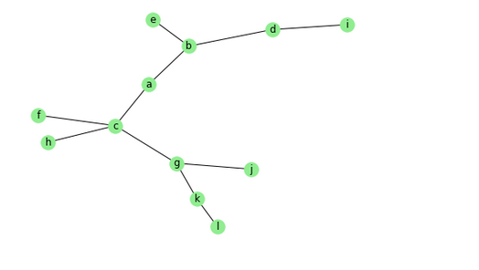
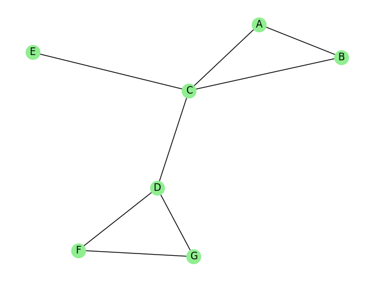

Algorithmes sur les graphes
On va s'intéresser aux parcours de graphe. il existe dexu types de parcours principaux :
- Le parcours en largeur ou BFS
- le parcours en profondeur ou DFS
1. Le parcours en largeur
Le principe
On va utilser un structure de file pour stocker nos sommets en cours de visite et une liste pour stocker nos sommets visités
- On part d'un sommet, on l'ajoute dans la file .
- On parcourt les voisins du sommet. S'ils n'ont pas été visités, on les insère dans la file puis on défile le premier élément de la file, on l'ajoute à la liste des visités et on répète le point 2 tant que la file n'est pas vide
Exemple

Le sommet de départ est a
|visités| file | étape|
|--------- | ------------------ | ------ |
|[a]|b,c| Le sommet de départ a est marqué visité. On enfile ses voisins, ordre aléatoire|
|[a,b]|c,e,d| b est visité, on ajoute ses voisins à la file ...sauf a qui est déjà visité|
|[a,b,c]| e,d, g,f,h| c est visité, on ajoute ses voisins ...sauf a |
|[a,b,c,e]| d,g,f,h| e est visité , aucun voisin non visité|
|[a,b,c,e,d]| g,f,h,i| d est visité , i est ajouté à la file|
|[a,b,c,e,d,g]| f,h,i,k,j| g est visité, k et j ajouté à la file |
|[a,b,c,e,d,g,f]| h,i,k,j| f est visité |
|[a,b,c,e,d,g,f,h]| i,k,j| h est visité |
|[a,b,c,e,d,g,f],h,i| k,j| i est visité |
|[a,b,c,e,d,g,f,h,i,k]| j,l| k est visité, l ajouté |
|[a,b,c,e,d,g,f,h,i,k,j]| l| j est visité, l ajouté |
|[a,b,c,e,d,g,f,h,i,k,j,l]| | l visité, file vide ---> l'algorithme s'arrête |
A retenir
Lors d'un parcours en largeur , on visite les sommets à la distance 1 du sommet de départ, puis ceux à la distance 2 , etc.. Il ya plusieurs parcours en largeur possible à partir d'un sommet.
L'algorithme
def BFS(graphe,s):
""" Ce programme prend en paramètre un dictionnaire dont les
clés sont les sommets du graphe et les valeurs
une liste des sommets adjacents à la clé.
Renvoie un parcours en largeur du graphe à partir du sommet s
"""
visite =[]
file =[s]
while file !=[]:
a = file.pop(0)
visite.append(a)
for v in G[a]:
if v not in visite :
file.append(v)
return visite
2. Le parcours en profondeur
Le principe
On va utilser un structure de pile pour stocker nos sommets en cours de visite et une liste pour stocker nos sommets visités
- On part d'un sommet, on l'ajoute dans la pile .
- On dépile . Si le sommet dépilé n'est pas visité, on l'ajoute à visite et on parcourt ses voisins. S'ils n'ont pas été visités, on les insère dans la pile et on répète le point 2 tant que la pile n'est pas vide
exemp!e

Le sommet de départ est A
| visités | pile | étape |
|---|---|---|
| [A] | B,C | Le sommet de départ A est marqué visité. On empile ses voisins, ordre aléatoire |
| [A,C] | B,B,E,D | C est marqué visité. On empile ses voisins |
| [A,C,D] | B,B,E,F,G | D est marqué visité. On empile ses voisins, sauf C déjà visité |
| [A,C,D, G] | B,B,E,F,F | G est marqué visité. On ajoute F à la pile |
Il ne reste plus qu'à dépiler pour obtenir [A,C,D,G,F,E,B]. Lors de la rencontre du second F, on le dépile et comme il est visité, on ne fera rien. Idem pour le second B. On aurait pu empiler uniquement les éléments non visités et non déjà empilés .
A retenir
Lors d'un parcours en profondeur , on visite les sommets branche par branche . On va le plus loin possible en visitant le maximum de sommets.
Algorithme
def DFS(G,s):
visite =[]
pile =[s]
while pile != []:
a =pile.pop()
if a not in visite:
visite.append(a)
for v in G[a]:
if v not in visite:
pile.append(v)
return parcours